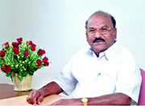
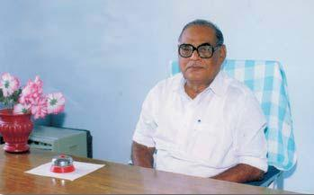
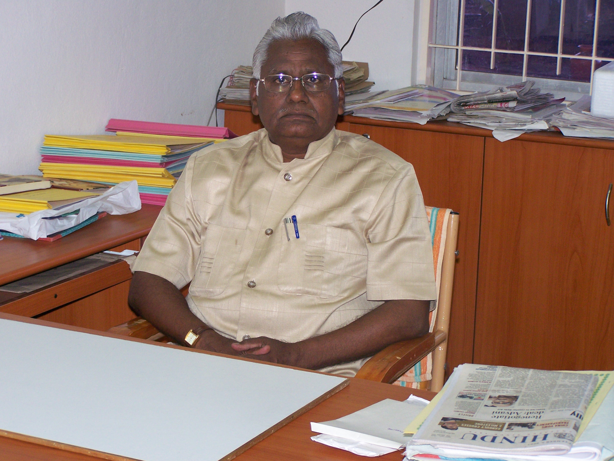
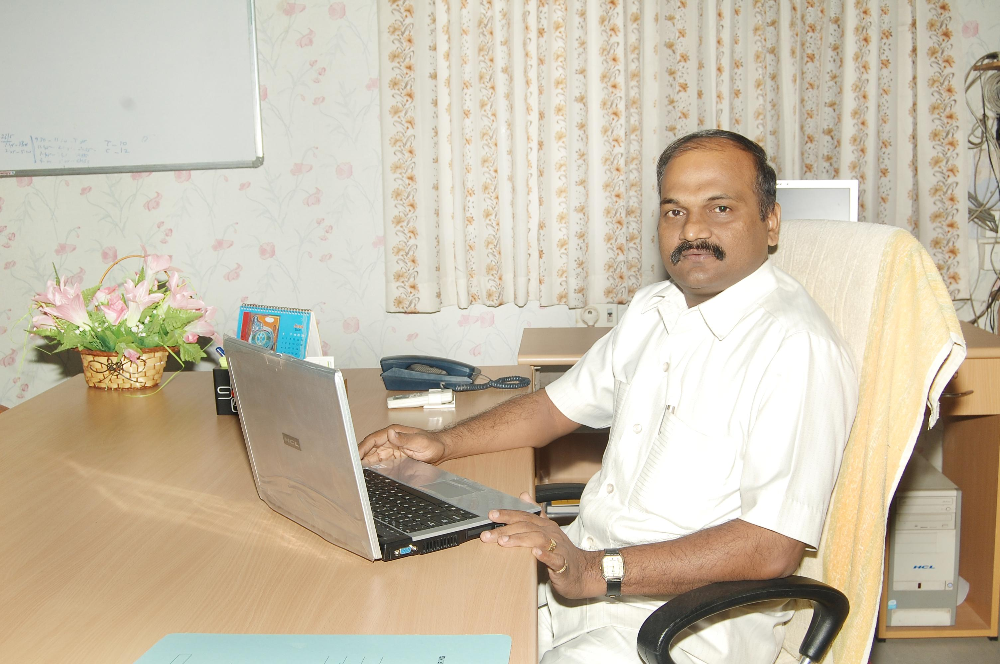
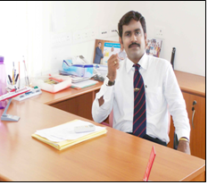
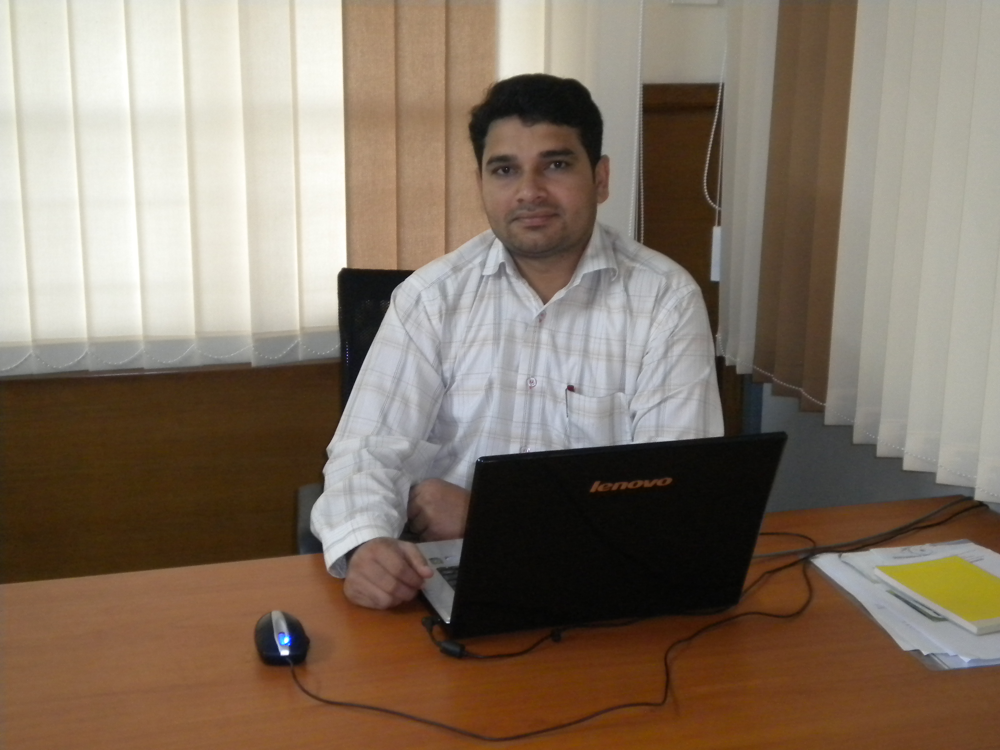

CHAIRMAN

Boundless happiness fills my heart to release the souvenir recordo of the
National Level Technical Symposium RAZONAMIENTO'12.The electrified
thoughts of young minds are given an outlet through RAZONAMIENTO'12. So
I celebrate this symposium as a boisterous and delirious one, as innumerable
fertile, productive ideas and thoughts are showcased by our unrivalled
conquerors.
I appreciate and admire the laudable efforts put forth by the
Director, The Principal,The Head of the Department, The Faculty Members
and the students of MCA for theirstately venture in shaping this symposium
in a unique way.
Let God be with you in all your endeavours and let His
Blessings permit you all, to tastethe flavour of success.
Back
Thiru. T.P. ARUMUGAM Ex. M.L.A.,
Secretary & Correspondent,

Science without religion is lame,
Religion without science is blind
-Albert Einstein
The field of Computer Science allures all with its, perennial charm and it is omnipresent.
RAZONAMIENTO'12
, a National Level Technical Symposium, organized by the Department of M.C.A., aims at tapping the potentials and sharpening their brains of the youngsters to get the expected results.
RAZONAMIENTO'12 proclaims the rising of a new glorious era. Souvenier ricordo offers a chance for the seizable number of toppers to afoot, new efforts. For several stemming problems, seeds of new ideas are sown now by the young talented minds.
congratulate the Director, the Principal, the H.O.D., the faculty members and the students of the Department of M.C.A., for organizing RAZONAMIENTO'12 in a successful way.
On behalf of Sengunthar Charitable Trust, I extend my best wishes for the organizers and the participants.
Back
Prof. A. Baladhandapani, M.A., M.Phil.,
Director,

Science and Art belong to whole world, and
Before them vanish the barriers of nationality.
We are all proud of the Age we live in the Age of Science and Technology. Computer Technology occupies an inevitable place in all walks of our life. As smell is natural to flowers, so is the quest for knowledge to man.
RAZONAMIENTO'12, a National Level Technical Symposium, is a colourful festival for knowledge hunters as it churns the quest in the thirsty minds. It serves as perfect platform for the students from colleges all over the country, to interact and share their views.
This souvenir displays bewitching richness and matchless magnificence as it renders a chance to all youngsters to come out with breath taking ideas. It wide opens a new co-operative era because students from in and around are invited to reveal their quintessence of wit.
I congratulate the Principal, the H.O.D., the faculty members and the Students of the Department of M.C.A., for organizing RAZONAMIENTO'12 in a wonderful manner.
Let the Almighty shower His Blessings to make RAZONAMIENTO'12 a grand success.
Back <--
Dr. N. Kottiswaran.,BE(Civil).,ME(Struct) Ph.D.,
Principal

Students skills are intricately carved and compactly packed in our institution through workshops, symposiums and conferences. This souvenir recordos wealth of wit injects a sense of wonder and joy in me. I hope that this symposium will serve as a tool for the evolution of students career and in turn our nations future.
I am pleased and I would like to share a word of appreciation for the Department of MCA for releasing the souvenir ricordo on the glorious occasion of RAZONAMIENTO'12, a National Level Technical Symposium. I hope this opportunity will pave a way to exhibit the hidden sparks in the young and energetic brains. Let us embark many more glory in our voyage through the finer realms of knowledge with the support of our management, faulty and students.
Back <--
A.B.Madhan,BE(Aeronautical)
CEO

RAZONAMIENTO'12 promise an exhilarating multi-genre diversity and render a scope for all the inspried scholars to come out with their flamboyant skills.I wish all the youngers to participate actively in such symposiums which will show them a new horizon and kindle the query"What is next?" I congratulate the Head of the Department,faculty members and the students for their inventive steps in bringing out this event in a grandiose way
Back <--
Mr.Aravind Thirunavukkarasu,MCA
Administrative Officer.

Sharing the big dream of a future where computers are completely capable of taking over human tasks, these computer scientists and software engineers have gathered in Sengunthar Engineering college,MCA Dept is one of the best Department in our College.
RAZONAMIENTO'12 is the 8th National Level Technical Symposium that have been organizedbytheDepartmentofMCA.
In the world that we live in toady we are closely related to information and managing data with applications in every aspect of our lives.In this One-day symposium the future software Engineers will discuss the mechanisms. “A good scientist is a person with original ideas. A good engineer is a person who makes a design that works with as few original ideas as possible . “
Back
S.Pradeep Gnanam,MCA.,M.Phil.,(Ph.D)
Convenor

Sengunthar college of Engineering renders grains of salt that appease appetite in technical education. I feel extremely happy in organizing this 6th National Level Technical Symposium RAZONAMIENTO'12 at our our college campus.
Our students utilize this dazzling chance to reveal their technical insight and artistic depth.
With great pleasure, I extend my humble gratitude to our venerated Secretary and Correspondent Thiru.A.P. Arumugam. Ex MLA for giving his whole hearted blessings and support.
We submit our gratitude to our Director Prof. A. Baladhandapani, M.A., M.Phil., for his generous counsel and ardent encouragement.
We express our sincere thanks to our beloved Principal Dr. N. Kottiswaran, for his enthusiastic support and suggestion throughout this venture.
I convey my appreciation to the staff members, of the Department of MCA for their co-operative spirit and amiable ideas.
I and the staff members of our Department, congratulate all the students, who have made this event a notable one.
I thank all delegates and the student friends from various colleges for their contribution and unlimited prolific enthusiasm.
Best Wishes,
Back <--